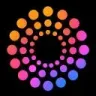
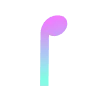

МолекулаАгрегаторы нейросетей
Молекула объединяет модели для текстов, изображений, видео и музыки. В одном аккаунте можно подобрать инструмент под этап работы, сохранить инструкции проекта и использовать готовые роли.
К задаче в МолекулеСоздание музыки: Задайте жанр и структуру композиции. Сравните управление фрагментами, экспорт и условия использования записи.
Подберите музыкальное настроение для обзора настольной игры без вокала. Опишите темп, инструменты и характер звучания; прослушайте результат вместе с пробной речью, чтобы оценить, не отвлекает ли фон от объяснения правил.
Создай инструментальную музыку для обзора настольной игры: мягкое пианино, лёгкая перкуссия, спокойный ровный ритм. Без вокала и резких акцентов, чтобы фон не отвлекал от объяснения правил.
Молекула объединяет модели для текстов, изображений, видео и музыки. В одном аккаунте можно подобрать инструмент под этап работы, сохранить инструкции проекта и использовать готовые роли.
К задаче в МолекулеBeatoven.ai используют, чтобы готовить музыкальную композицию по заданию.
Для «Jamahook» сначала определите свою задачу и требуемый результат. Карточка относится к направлению «Аудио (голос и музыка)».

LALAL.AI разделяет вокал и инструментальные составляющие аудио с помощью ИИ. Обработка также предусмотрена для звуковых дорожек видео, а отдельные средства направлены на удаление помех и нежелательных звуков. Для включения этих операций в другие сервисы у продукта описан программный интерфейс.
«Music AI (music.ai)» подготавливает музыкальные варианты по заданию.
«Musicfy» подготавливает музыкальные варианты по заданию.
Для «Musiclips» сначала определите свою задачу и требуемый результат. Карточка относится к направлению «Создание музыки».
«Muzaic.studio» помогает подготовить персонализированный видеоматериал.
«Sonauto AI» подготавливает музыкальные варианты по заданию.
«TuneFlow» подготавливает музыкальные варианты по заданию.
«AI Song Generator Music Maker» подготавливает музыкальные варианты по заданию.
«AIArt» готовит визуальные материалы по заданию.
Для «Chat Jams» сначала определите свою задачу и требуемый результат. Карточка относится к направлению «ИИ-ассистент».
«Dadabots» подготавливает музыкальные варианты по заданию.
Ecrett Music создаёт музыкальные треки и предлагает настройку инструментальной структуры. Работа опирается на набор музыкальных заготовок, а использование результата связано с отдельными лицензионными условиями. Основной сценарий состоит в подготовке звучания под свой проект: состав инструментов меняется при выборе варианта, а права на публикацию проверяются отдельно.
«Fadr» подготавливает музыкальные варианты по заданию.
«Melobytes.com» получает речевую запись из текста. «Melobytes.com» также подготавливает музыкальные варианты по заданию.
«RipX» подготавливает музыкальные варианты по заданию.
«ScoreCloud» подготавливает музыкальные варианты по заданию.
«StockmusicGPT» подготавливает музыкальные варианты по заданию.
Suno помогает создавать песни и музыкальные наброски по заданию. Можно описать характер звучания и подобрать вариант для самостоятельной композиции, заставки или сопровождения видео.
Udio создаёт музыкальный материал по описанию стиля, настроения и темы. Для рабочего использования важно прослушать структуру, проверить слова и уточнить доступный способ публикации.
«AI Jukebox» подготавливает музыкальные варианты по заданию.
«Binaural Beats Factory» представлен в разделе «Аудио (голос и музыка)». При выборе проверьте нужную операцию и условия работы с результатом.
Cosonify организует работу над музыкой через отдельные доски исследования, идей и задач. Набор предназначен для музыкантов и других авторов музыкальных проектов. Инструмент связывает подготовку замысла с планированием работы, позволяя обсуждать направление произведения и распределять действия при совместной разработке творческого материала.
«Drumless» подготавливает музыкальные варианты по заданию.
Для «Free Music Demixer» сначала определите свою задачу и требуемый результат. Карточка относится к направлению «Аудио (голос и музыка)».
«Hydra» представлен в разделе «Аудио (голос и музыка)». При выборе проверьте нужную операцию и условия работы с результатом.
Сравнивать «Lamucal (lamucal.ai)» с другими инструментами раздела «Аудио (голос и музыка)» удобнее на одинаковом исходном материале.
Raplyrics использует текстовые подсказки для генерации материалов, связанных с рэпом. Проект также обращается к историям рэп-культуры и её общественному влиянию, а механизм описан через программный интерфейс машинного обучения. Назначение объединяет творческие запросы с тематикой рэп-музыки, без подтверждённого набора средств производства готового аудиотрека.

Soundverse AI относится к инструментам, которые помогают работать с синтезированной голосовой партией. Ещё одно направление работы: готовить музыкальную композицию по заданию.
Stability AI относится к инструментам, которые помогают собирать видеосцену по описанию или визуальному исходнику. Ещё одно направление работы: получать изображения из словесного задания.
«Suno.works» подготавливает музыкальные варианты по заданию.
Сравнивать «Udio AI Music Generator» с другими инструментами раздела «Создание контента» удобнее на одинаковом исходном материале.
«VirtuozyAI» подготавливает музыкальные варианты по заданию.

WritePoetry.ai рассчитан на задачи, где нужно готовить музыкальную композицию по заданию. Ещё одно направление работы: готовить видеоматериалы для публикации.
«Itoka MuseEngine» подготавливает музыкальные варианты по заданию.
Landr объединяет онлайн-инструменты для подготовки и распространения музыки. В продукте представлены мастеринг и цифровой выпуск, а также плагины и наборы сэмплов. Авторы могут пользоваться средствами совместной работы и продвижения, связывая обработку музыкального материала с дальнейшим представлением аудитории.

Ludo.ai используют, чтобы получать изображения из словесного задания. Ещё одно направление работы: готовить музыкальную композицию по заданию.
«Output» подготавливает музыкальные варианты по заданию.
«SongBot AI Music» подготавливает музыкальные варианты по заданию. «SongBot AI Music» помогает подготовить персонализированный видеоматериал.
Text To Music рассчитан на задачи, где нужно готовить музыкальную композицию по заданию.

В инструменте «Verbatik» можно готовить музыкальную композицию по заданию. Ещё одно направление работы: собирать видеосцену по описанию или визуальному исходнику.
«AI Jingle Generator» представлен в разделе «Аудио (голос и музыка)». При выборе проверьте нужную операцию и условия работы с результатом.
«AI Song (aisong.fun)» подготавливает музыкальные варианты по заданию.
«Amadeus Code» предлагает последовательности аккордов для музыкального эскиза. Дополнительно «Amadeus Code» подготавливает музыкальные варианты по заданию.
Boomy создаёт музыкальные произведения с помощью ИИ без требования предварительного музыкального опыта. Пользователь работает с разными жанровыми направлениями, а в описании предусмотрена отправка созданных песен на потоковые площадки. Продукт объединяет генерацию музыкального материала с направлением его дальнейшего распространения, не подтверждая условия каждой отдельной публикации.
Covers AI подготавливает вокальные каверы с использованием ИИ-моделей голоса. Пользователь может создавать собственные варианты голосового исполнения в музыкальном проекте. Продукт относится к работе над вокальной частью, связывая доступные голосовые средства и выбранное направление дальнейшего оформления создаваемого автором аудиоматериала.
Страница 1 из 3
Для подкаста о городской мастерской заранее решите, где звучит приветствие и когда начинается основная тема. В брифе укажите настроение, характер инструментов и развитие. Активная мелодия может подходить самостоятельному прослушиванию, но отвлекать от объяснения даже после уменьшения громкости.
Проверяйте музыку вместе с настоящей речью ведущего. Слово «спокойная» не задаёт удобное размещение акцентов. Отметьте, где нужна менее плотная часть, и сравните полученный фрагмент с монтажным планом. Для песни отдельно подготовьте утверждённый текст и проверьте его на слух.
Suno помогает получать песни и музыкальные идеи по заданию. Для пробы используйте один бриф и оценивайте развитие композиции. Если в вокале звучат собственные слова, сверяйте произношение и повторение строк с текстом, а не только впечатление от мелодии.
Udio предлагает создание музыки по описанию и работу с продолжением композиции. Проверьте, насколько начало и окончание подходят вашей заставке. Перед планированием публикации выясните действующий способ получения результата и условия его применения в своём аккаунте.
Mureka также работает с описанием и собственными словами. Дополнительные операции с проектом и дорожками следует испытать в доступном режиме. Если нужны отдельные части для сведения, проверьте их качество и реальную возможность выгрузки до большого заказа.
Оцените весь материал: начало, переходы и финальную фразу. Не выбирайте трек только по удачному припеву. Для повторяющегося фона проверьте стык нескольких циклов. Выраженное окончание может выдавать каждое повторение и мешать ровному рассказу.
Сохраните бриф, выбранную версию и основания для использования текста и исходных записей. Не приравнивайте возможность генерации к разрешению на любое коммерческое размещение. Если проекту нужна разговорная озвучка, следующий этап находится в категории генерации голоса, где проверяются другие свойства результата.